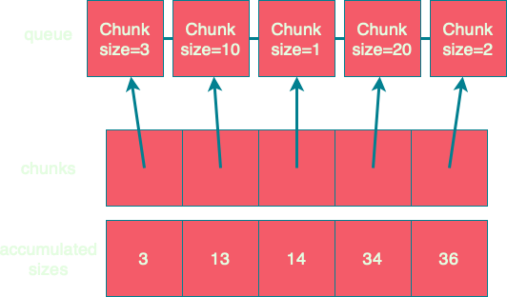

trait Socket[F[_]]:
def reads: Stream[F, Byte]
trait Files[F[_]]:
def readAll(path: Path): Stream[F, Byte]fs2.Chunk
A chunk is…
an immutable, strict, finite sequence of values
that supports efficient index-based random access of elements
A chunk Vector is…
an immutable, strict, finite sequence of values
that supports efficient index-based random access of elements
Why not use Vector?
If streams passed around vectors, we’d need to copy the underlying buffers.
Why not use Vector?
| Size | 0 | 1 | 10 | 100 | 1K | 10K |
|---|---|---|---|---|---|---|
2.12 Vector | 56 | 216 | 216 | 792 | 4824 | 46728 |
2.13 Vector | 40 | 56 | 88 | 536 | 4696 | 46528 |
Array | 16 | 24 | 32 | 120 | 1016 | 10016 |
Chunk | 16 | 32 | 64 | 152 | 1048 | 10048 |
Vector[Byte],Array[Byte], andChunk[Byte]Object size reported by Spark’s
SizeEstimator.estimate
A chunk is…
an immutable, strict, finite sequence of values
that supports efficient index-based random access of elements
that’s memory efficient for all sizes
that avoids unnecessary copying
A chunk is finite
trait Chunk[+A]:
def size: IntA chunk has efficient random acceess
trait Chunk[+A]:
def size: Int
def apply(idx: Int): AA chunk is memory efficient
object Chunk:
val empty: Chunk[Nothing] = new:
def size = 0
def apply(idx: Int) = throw new IndexOutOfBoundsException
def singleton[A](a: A): Chunk[A] = new:
def size = 1
def apply(idx: Int) = idx match
case 0 => a
case _ => throw new IndexOutOfBoundsException
def array[A](arr: Array[A]): Chunk[A] = new: (1)
def size = arr.length
def apply(idx: Int) = arr(idx)| 1 | Not making a defensive copy for performance reasons |
A chunk avoids copying
object Chunk:
def vector[A](as: Vector[A]): Chunk[A] = new:
def size = as.size
def apply(idx: Int) = as(idx)
import java.nio.ByteBuffer
def byteBuffer(buffer: ByteBuffer): Chunk[Byte] = new:
private val b = buffer.duplicate().asReadOnlyBuffer
def size = b.remaining
def apply(idx: Int) = b.get(b.position + idx)Combinators: foreach
trait Chunk[+A]:
def size: Int
def apply(idx: Int): A
def foreach(f: A => Unit): Unit =
var i = 0
while (i < size)
f(apply(i))
i += 1Combinators: foreachWithIndex
trait Chunk[+A]:
def size: Int
def apply(idx: Int): A
def foreachWithIndex(f: (A, Int) => Unit): Unit =
var i = 0
while (i < size)
f(apply(i), i)
i += 1Combinators: map
trait Chunk[+A]:
def map[B](f: A => B): Chunk[B] =
???Combinators: map
trait Chunk[+A]:
def map[B](f: A => B): Chunk[B] =
var arr = new Array[B](size) (1)
foreachWithIndex((a, i) => arr(i) = f(a))
Chunk.array(arr)| 1 | cannot find class tag for element type B |
Combinators: mapCompact
trait Chunk[+A]:
def mapCompact[B: ClassTag](f: A => B): Chunk[B] = (1)
var arr = new Array[B](size)
foreachWithIndex((a, i) => arr(i) = f(a))
Chunk.array(arr)| 1 | Add a ClassTag constraint |
Combinators: mapCompact
mapCompact doesn’t exist on Chunk - why?
Function1is not specialized for all primitivestrait Function1[ @specialized(Int, Long, Double) -T1, @specialized(Int, Long, Float, Double, Boolean, Unit) +R]ClassTagconstraints virally propagateForces folks to chose between
mapandmapConcat
Combinators: map
trait Chunk[+A]:
def map[B](f: A => B): Chunk[B] =
var arr = new Array[Any](size) (1)
foreachWithIndex((a, i) => arr(i) = f(a))
Chunk.array(arr).asInstanceOf[Chunk[B]] (2)| 1 | Create an an Array[Any] instead |
| 2 | Unsound! Must ensure the underlying array is never accessed as an Array[B] |
Combinators: compact
trait Chunk[+A]:
def toArray[A2 >: A: ClassTag]: Array[A] =
val arr = new Array[A2](size)
foreachWithIndex((a, i) => arr(i) = a)
arr
def compact[A2 >: A: ClassTag]: Chunk[A] =
Chunk.array(toArray)Combinators: filter
trait Chunk[+A]:
def filter(p: A => Boolean): Chunk[A] =
???Combinators: filter
trait Chunk[+A]:
def filter(p: A => Boolean): Chunk[A] =
val b = collection.mutable.ArrayBuilder.make[Any] (1) (2)
b.sizeHint(size)
foreach(a => if p(a) then b += a)
Chunk.array(b.result()).asInstanceOf[Chunk[A]]| 1 | Use ArrayBuilder instead of Array since we don’t know final size |
| 2 | Use Any like in map, resulting in boxing of primitives |
A chunk is…
an immutable, strict, finite sequence of values
that supports efficient index-based random access of elements
that’s memory efficient for all sizes
that avoids unnecessary copying
Avoiding Copying
val huge: Chunk[Byte] = ???
val crlf: Chunk[Byte] = Chunk.array("\r\n".getBytes)
val discouraged = Stream.chunk(huge ++ crlf)
val encouraged = Stream.chunk(huge) ++ Stream.chunk(crlf)How can we discourage copying?
Avoiding Copying
val huge: Chunk[Byte] = ???
val crlf: Chunk[Byte] = Chunk.array("\r\n".getBytes)
val discouraged = Stream.chunk(Chunk.concat(List(huge, crlf)))
val encouraged = Stream.chunk(huge) ++ Stream.chunk(crlf)Make it inconvenient!
concat
object Chunk:
def concat[A: ClassTag](chunks: Seq[Chunk[A]]): Chunk[A] =
val totalSize = chunks.foldMap(_.size)
val arr = new Array[A](totalSize)
var offset = 0
chunks.foreach { c =>
if !c.isEmpty then
c.copyToArray(arr, offset)
offset += c.size
}
Chunk.array(arr)unconsN
def unconsN[F[_], O](
s: Stream[F, O],
n: Int
): Pull[F, Nothing, Option[(Chunk[O], Stream[F, O])]] =
def go(
acc: Queue[Chunk[O]],
s: Stream[F, O],
n: Int
): Pull[F, Nothing, Option[(Chunk[O], Stream[F, O])]] =
s.pull.uncons.flatMap {
case None => Pull.pure(Chunk.concat(acc))
case Some((hd, tl)) =>
if hd.size < n then
go(acc :+ hd, tl, n - hd.size)
else
val (pfx, sfx) = hd.splitAt(n)
val out = Chunk.concat(acc :+ pfx)
Pull.pure((out, tl.cons(sfx))
}
go(Queue.empty, s, n)unconsN
Problem:
concatrequires aClassTag[O]Option 1: add
ClassTagconstraintdef unconsN[F[_], O: ClassTag](...)Option 2: change return type to
Queue[Chunk[O]]def unconsN[F[_], O]( ... ): Pull[F, Nothing, Option[(Queue[Chunk[O]], Stream[F, O])]]Option 3: remove
ClassTagconstraint fromconcat
concat tagless
object Chunk:
def concat[A](chunks: Seq[Chunk[A]]): Chunk[A] =
val totalSize = chunks.foldMap(_.size)
val arr = new Array[Any](totalSize)
var offset = 0
chunks.foreach { c =>
if !c.isEmpty then
c.copyToArray(arr, offset)
offset += c.size
}
Chunk.array(arr).asInstanceOf[Chunk[A]]Downside: primitives get boxed. Can we fix?
concat too clever
object Chunk:
def concat[A](chunks: Seq[Chunk[A]]): Chunk[A] =
if chunks.forall(containsOnly[Byte])
then concatTagged[Byte](
chunks.asInstanceOf[Seq[Chunk[Byte]]]
).asInstanceOf[Chunk[A]]
else if ...
else concatUntagged(chunks)
def containsOnly[A](c: Chunk[A])(using ct: ClassTag[A]): Boolean =
c.knownElementType == ct || c.forall(_.isInstanceOf[A])
def concatUntagged[A](chunks: Seq[Chunk[A]]): Chunk[A] =
/* store elements in an Array[Any] */
def concatTagged[A: ClassTag](chunks: Seq[Chunk[A]]): Chunk[A] = ???
/* store elements in an Array[A] */concat too clever
scalajs> 1.isInstanceOf[Byte]
res0: Boolean = trueReflection is never safe.[1]
1. I made up this Scala.js REPL, but the result is real!
unconsN
Problem:
concatrequires aClassTag[A]Option 4: make
Queue[Chunk[A]]a subtype ofChunk[A]
Chunk.Queue
import scala.collection.immutable.Queue as SQueue
object Chunk:
class Queue[+A] private (
val chunks: SQueue[Chunk[A]],
val size: Int
) extends Chunk[A]:
def +:[A2 >: A](c: Chunk[A2]): Queue[A2] =
if c.isEmpty then this
else new Queue(c +: chunks, c.size + size)
def :+[A2 >: A](c: Chunk[A2]): Queue[A2] =
if c.isEmpty then this
else new Queue(chunks :+ c, size + c.size)
def apply(i: Int): O =
if i < 0 || i >= size
then throw new IndexOutOfBoundsException()
def go(chunks: SQueue[Chunk[O]], offset: Int): O =
val head = chunks.head
if offset < head.size then head(offset)
else go(chunks.tail, offset - head.size)
go(chunks, i)Chunk.Queue#++
trait Chunk[+A]:
def ++[A2 >: A](that: Chunk[A2]): Chunk[A2] =
if isEmpty then that
else
that match
case that if that.isEmpty => this
case that: Chunk.Queue[A2] => this +: that
case that => Chunk.Queue(this, that)unconsN Redux
def unconsN[F[_], O](
s: Stream[F, O],
n: Int
): Pull[F, Nothing, Option[(Chunk[O], Stream[F, O])]] =
def go(
acc: Chunk[O],
s: Stream[F, O],
n: Int
): Pull[F, Nothing, Option[(Chunk[O], Stream[F, O])]] =
s.pull.uncons.flatMap {
case None => Pull.pure(acc)
case Some((hd, tl)) =>
if hd.size < n then
go(acc ++ hd, tl, n - hd.size)
else
val (pfx, sfx) = hd.splitAt(n)
val out = acc ++ pfx
Pull.pure((out, tl.cons(sfx))
}
go(Queue.empty, s, n)Chunk.Queue Runtime
What’s asymptotic runtime of
Chunk.Queue#apply?If number of constituent chunks is much smaller than total size, then O(1)
As number of constituent chunks approaches total size, runtime approaches O(n)
Chunk.Queue
What’s asymptotic runtime of
foreach?trait Chunk[+A]:
def foreach(f: A => Unit): Unit =
var i = 0
while (i < size)
f(apply(i))
i += 1O(n) when number of constituent chunks much smaller than total size
O(n2) when number of constituent chunks approaches total size
Restoring foreach linearity
object Chunk:
class Queue[+A] private (
val chunks: SQueue[Chunk[A]],
val size: Int
) extends Chunk[A]:
def foreach(f: A => Unit): Unit =
chunks.foreach(_.foreach(f))
def foreachWithIndex(f: (A, Int) => Unit): Unit =
var i = 0
chunks.foreach { chunk =>
chunk.foreach { a =>
f(a, i)
i += 1
}
}What about lookup by index?
What about lookup by index?
Compute an array of accumulated sizes
sizes(0) = size of first chunk
sizes(1) = sum of sizes of first and second chunk
To lookup element at index i:
Binary search sizes to find smallest entry greater than i
The chunk at the resulting index contains the desired element
(Suggested by fs2 maintainer Diego E. Alonso Blas)
What about lookup by index?

apply(20)
> find smallest acc > 20
> returns idx = 3, acc = 34
> return chunks(idx)(20 - 14)What about lookup by index?
class Queue[+A](...):
private[this] lazy val accumulatedSizes: (Array[Int], Array[Chunk[O]]) =
val sizes = new Array[Int](chunks.size)
val arr = new Array[Chunk[A]](chunks.size)
var accSize = 0
var i = 0
chunks.foreach { c =>
accSize += c.size
sizes(i) = accSize
arr(i) = c
i += 1
}
(sizes, arr)
def apply(i: Int): A =
if i < 0 || i >= size
then throw new IndexOutOfBoundsException()
if i == 0 then chunks.head(0)
else if i == size - 1 then chunks.last.last.get
else
val (sizes, chunks) = accumulatedSizes
val j = java.util.Arrays.binarySearch(sizes, i)
if j >= 0 then
chunks(j + 1)(0)
else
val k = -(j + 1)
val accSizeBefore = if k == 0 then 0
else sizes(k - 1)
chunks(k)(i - accSizeBefore)Runtimes
For a
Chunk.Queuewith n elements and m constituent chunks:first call to
applyisO(m log m)subsequent calls are
O(log m)Worst case
m == n
Wrap-up
A chunk is…
an immutable, mostly strict, finite sequence of values
that supports mostly efficient index-based random access of elements
that’s memory efficient for all sizes
that avoids unnecessary copying
Design is a series of logical decisions.
Summary
Identify important properties
Constraints provide tension
Be open to relaxing constraints
Benchmark common usage patterns
Iterate